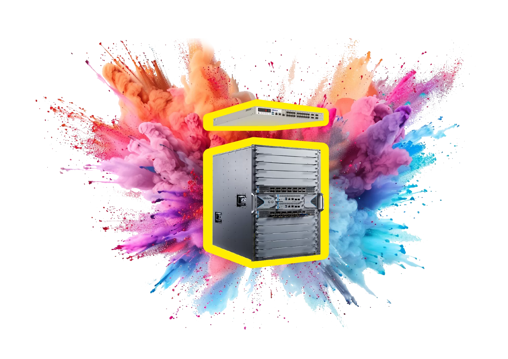

业务场景
产品与服务
行业
安全能力
支持与培训
合作伙伴
投资者关系
关于我们
如何购买

山石网科新闻中心
界面新闻｜山石网科协办“山石·蒙山杯”网络安全大赛，共话AI安全新趋势
6月28日,由山东省网信办指导,临沂市委网信办、市委市直机关工委、市总工会、团市委、市发展改革委等15家政府单位联合主办,山石网科参与协办的2024年临沂市首届“山石·蒙山杯”网络安全大赛在山东临沂顺利举办
中华网｜全部立项！山石网科22个项目获批教育部就业育人项目
近日,教育部高校学生司(高校毕业生就业服务司)下发《关于公布第三期供需对接就业育人项目立项名单的通知》(教就业司函〔2024〕23号),山石网科携手多所院校申报的22个项目,全部成功立项!
中华网｜山石网科春华行动走进广东，助力用户数字化转型
山石网科“2024春华行动”正在火热进行中,作为公司年度重点市场活动,我们深入全国各大城市,致力于推广最新的安全技术与创新产品方案,目前已覆盖香港、上海、江苏等多地,涉及政府、金融、医疗等多个核心行业,旨在挖掘合作新机遇,助力企业数字化转型加速。